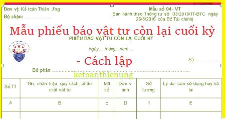

Hướng dẫn cách lập Phiếu báo vật tư còn lại cuối kỳ theo Thông tư 133 và 200 - Mẫu 04-VT, Phiếu báo vật tư còn lại cuối kỳ được lập 2 bản, 1 bản giao cho phòng vật tư, 1 bản giao cho phòng kế toán.
1. Mẫu Phiếu báo vật tư còn lại cuối kỳ:
|
Đơn vị: Kế toán Diệu Tâm Bộ phận: ……………… |
Mẫu số 04 - VT (Ban hành theo Thông tư số 133/2016/TT-BTC ngày 26/8/2016 của Bộ Tài chính) |
PHIẾU BÁO VẬT TƯ CÒN LẠI CUỐI KỲ
Ngày 15 tháng 09 năm 2026
Ngày 15 tháng 09 năm 2026
Số: ……………
Bộ phận: ……………………………………………………………………………….
| Số TT | Tên, nhãn hiệu, quy cách, phẩm chất vật tư | Mã số | Đơn vị tính | Số lượng | Lý do: còn sử dụng hay trả lại |
| A | B | c | D | 1 | E |
|
|
|
Phụ trách bộ phận sử dụng (Ký, họ tên) |
II. Cách lập PHIẾU BÁO VẬT TƯ CÒN LẠI CUỐI KỲ
1. Mục đích:
- Theo dõi số lượng vật tư còn lại cuối kỳ hạch toán ở đơn vị sử dụng, làm căn cứ tính giá thành sản phẩm và kiểm tra tình hình thực hiện định mức sử dụng vật tư.
2. Phương pháp và trách nhiệm ghi
Góc bên trái của Phiếu báo vật tư còn lại cuối kỳ ghi rõ tên đơn vị (hoặc đóng dấu đơn vị), bộ phận sử dụng.
Số lượng vật tư còn lại cuối kỳ ở đơn vị sử dụng được phân thành hai loại:
- Nếu vật tư không cần sử dụng nữa thì lập Phiếu nhập kho (Mẫu số 02 - VT) và nộp lại kho.
- Nếu vật tư còn sử dụng tiếp thì bộ phận sử dụng lập Phiếu báo vật tư còn lại cuối kỳ thành 2 bản.
Phụ trách bộ phận sử dụng ký tên:
- 1 bản giao cho phòng vật tư (nếu có);
- 1 bản giao cho phòng kế toán.
Xem thêm: Mẫu biên bản kiểm nghiệm vật tư hàng hóa
------------------------------------------------------------------
------------------------------------------------------------------
